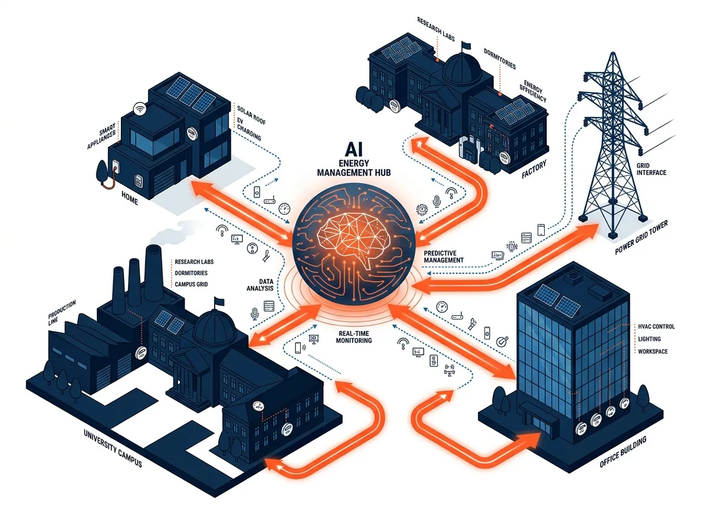

ناترازی روزافزون میان تولید و مصرف برق در ایران، شبکه سراسری را در تابستان با کسری بیش از ۱۵ الی ۲۰ هزار مگاواتی مواجه کرده است. روش سنتی حل این بحران، احداث نیروگاههای حرارتی جدید با هزینههای میلیارد دلاری و آلایندگی شدید محیطزیستی است — رویکردی که هم زمانبر است و هم با محدودیتهای شدید سوخت گاز و سرمایه مواجه است. راهکار نوین جهان، تشکیل نیروگاه مجازی (Virtual Power Plant یا VPP) است.
نیروگاه مجازی (VPP) دقیقاً چگونه کار میکند؟
نیروگاه مجازی نه از توربینهای فولادی غولپیکر تشکیل شده و نه دودی به آسمان میفرستد. VPP در اصل یک سیستم نرمافزاری متمرکز مبتنی بر هوش مصنوعی و اینترنت اشیاء (IoT) است که هزاران منبع انرژی پراکنده (Distributed Energy Resources) را به یکدیگر متصل میکند:
- کاهش تقاضای بار (Demand Response): خاموش کردن یا تعدیل موقت مصرف سیستمهای برودتی، چیلرها و پمپهای صنعتی در ساعات بحرانی اوج شبکه بدون افت محسوس رفاه.
- منابع تجدیدپذیر خورشیدی و بادی: ادغام پنلهای پشتبامی ساختمانها و نیروگاههای پراکنده.
- سامانههای ذخیرهساز باتری و دیزلژنراتورهای پشتیبان: فعالسازی باتریها دقیقاً در ثانیههای افت فرکانس شبکه.
«تولید نکردن ۱ کیلوواتساعت در زمان پیک شبکه، ارزشی معادل یا بیشتر از تولید ۱ کیلوواتساعت برق توسط گرانترین نیروگاه گازی کشور دارد — مفهومی به نام نِگاوات (Negawatt).»
نقش پلتفرم کاپ (KAP) در تحقق VPP در ایران
پلتفرم KAP فراتر از یک سامانه ساده پایش مصرف (Monitoring) یا سیستمهای قدیمی BMS عمل میکند. معماری KAP برای پیوند دادن مصرفکنندگان با شبکه ملی طراحی شده است:
- تحلیل و پیشبینی الگوی مصرف: الگوریتمهای یادگیری ماشین KAP رفتار مصرفی هر مشترک (صنعتی، اداری، آموزشی یا خانگی) را تحلیل کرده و ظرفیت تغییر بار هر مشترک را در هر ساعت از شبانهروز محاسبه میکنند.
- پاسخگویی سریع به نیاز دیسپاچینگ: هنگام هشدار افت فرکانس یا نزدیک شدن به سقف تولید شبکه، پلتفرم KAP به صورت خودکار یا توافقی، مصرف نقاط از پیش تعیینشده را بدون نیاز به قطع کل خط تعدیل میکند.
- اقتصاد دیجیتال انرژی و معاملهپذیر کردن ارزش برق: مشترکانی که در پیکسایی همکاری میکنند، از پاداشهای مالی شفاف یا امتیازهای اقتصادی برخوردار میشوند.
تفاوت نیروگاه مجازی با خاموشیهای اجباری
در وضعیت فعلی، مدیریت بار سنتی با قطع کامل فیدر برق شهرکهای صنعتی یا مناطق مسکونی انجام میشود که زیانهای سنگین صنعتی و نارضایتی شدید به همراه دارد. اما در نیروگاه مجازی KAP:
هیچ صنعتی به طور کامل تعطیل نمیشود؛ بلکه فرآیندهای غیربحرانی جابهجا میشوند، کولرها ۲ درجه تنظیم میگردند، و روشناییهای غیرضروری تعدیل میشوند. این تصمیمات هوشمندانه، قطعی برق را از یک تهدید فلجکننده به یک فرصت اقتصادی مشترک بدل میکند.